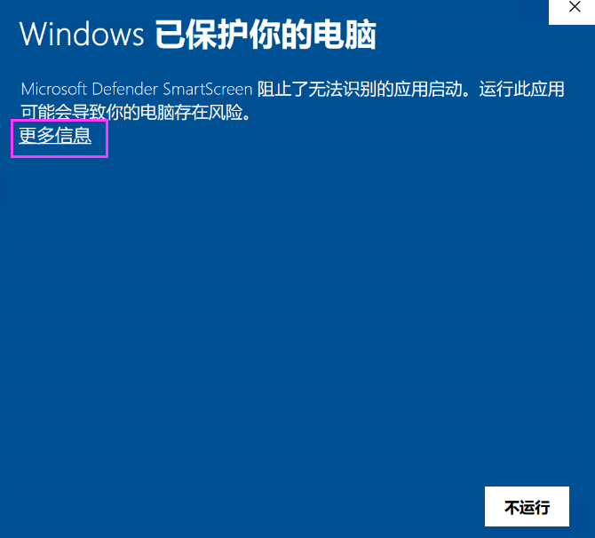
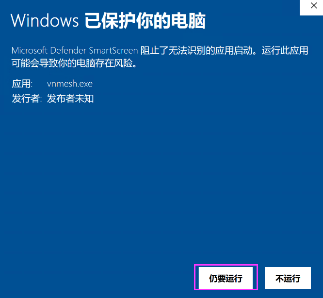

客户端使用说明
系统安装
tar xzf vnmesh_macos_apple_1.2.2.tar.gz #绿色部分改为您下载文件的名字 cd vnmesh ./start_vnmesh_macos.sh
tar xzf vnmesh_linux_x64_1.2.2.tar.gz #绿色部分改为您下载文件的名字 cd vnmesh ./vnmesh -d
vnmesh -d: 后台运行
vnmesh -c: 交互式前台运行
vnmesh -f: 非交互式前台运行
解压下载的文件，进入解压后的目录，双击运行 runcmd 或 vnmesh 程序。第一次运行会出现风险提示，点击"更多信息"，选择"仍要运行"即可。



vnmesh: 后台运行程序, 运行后会自动切换到后台
runcmd: 前台运行程序, 可以输入交互式命令
tar xzf vnmesh_termux_x64_1.2.2.tar.gz #绿色部分改为您下载文件的名字 cd vnmesh ./vnmesh -d
docker load -i vnmesh_docker_x64_1.2.2.tar #绿色部分改为您下载文件的名字 docker run -p 8888:8888 -d --name vnmesh vnmesh
配置管理
本地管理: http://localhost:8888
远程管理: http://目标IP:8888
如果没有浏览器, 可以使用其它方式配置, 参见: 客户端配置方式